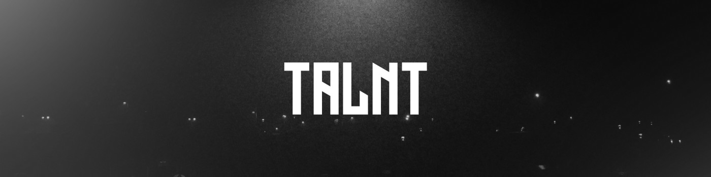

Una ficha deportiva propia
Vídeos, trayectoria y datos deportivos en un perfil compartible.

Una plataforma para que jugadores, clubes y profesionales del fútbol puedan descubrirse, mostrar su trayectoria y conectar con oportunidades reales.
01 / El proyecto
TALNT nace para dar visibilidad al fútbol amateur, formativo y semiprofesional. El proyecto reúne marca y producto en una misma experiencia digital, pensada para que cada perfil pueda mostrar quién es y qué busca.
El trabajo abarca la identidad visual, la definición del producto y la estructura de sus pantallas principales.
02 / Producto
La experiencia se organiza alrededor de tres acciones: mostrar talento, descubrir perfiles y encontrar oportunidades.
Vídeos, trayectoria y datos deportivos en un perfil compartible.
Búsqueda y filtros para que clubes y profesionales encuentren perfiles relevantes.
Pruebas, equipos, campus y torneos en un solo espacio.
03 / Desarrollo
El proyecto incluye el sistema de marca, la arquitectura de pantallas, el prototipo del MVP y materiales para presentar TALNT a clubes, colaboradores e inversores.